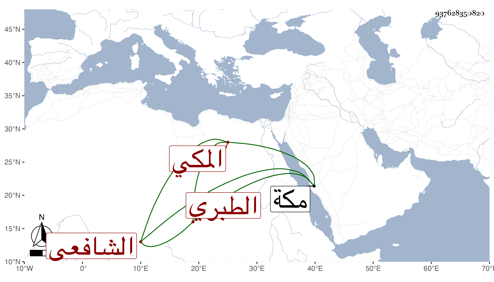

0902Sakhawi.DawLamic.ITO20230111-ara1.EIS1600.937628350820
Biography ID: 937628350820
706
مكرم بن محمد بن محمد بن محمد بن أحمد بن إبرهيم بن محمد بن إبرهيم إمام الدين أبو الكرم ويسمى أيضا محمد عبد الله بن المحب بن الرضى بن المحب بن الشهاب بن الرضى الطبري الأصل المكي الشافعي الماضي أبوه وجده وشقيقه أبو أبو السعادات محمد وغيره . ولد في عاشر شعبان سنة خمس وستين وثمانمائة بمكة ونشأ فحفظ القرآن وجوده وقرأ في غيره قليلا واشتغل كذلك وأم في سنة خمس وثمانين فما بعدها بمقام إبرهيم مناوبة مع أخويه ووالدهم ، ولذا بخصوصه تؤدة وسكون بالنسبة لهم وهو ممن لازمني في سنة ست وثمانين بمكة في أشياء وكذا بعد ذلك سيما في سنة تسع وتسعين وقبلها ويعجبني سكونه وتقعدده وهو أخف وطأة عند جمهور العامة من أخويه مع صغر سنه وقد أمرته في سنة أربع وتسعين بأشياء في إمامته فبادر لإظهار القبول والسرور .
